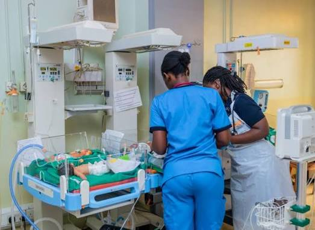

ST.Florence National Hospital is a leading government institution dedicated to providing exceptional care to our patients.
We are committed to improving the health and well-being of our patients through innovative medical practices, state-of-the-art facilities, and a team of highly skilled healthcare professionals.
Providing compassionate, professional, and quality healthcare services to individuals, families, and communities in Wakiso District and Kampala.
To provide accessible, affordable, and high-quality healthcare services to all members of the community.
To be the leading national healer's provider in the region, recognized for our commitment to patient care and medical excellence.
ST.Florence National Hospital offers a wide range of medical services, including:

We are committed to providing comprehensive healthcare solutions to meet the diverse needs of our patients.
© 2026 ST.Florence National Hospital. All rights reserved.